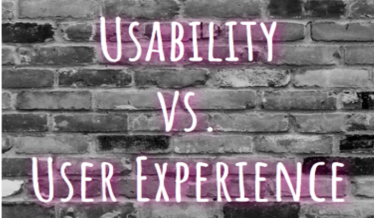

Du hast dich sicherlich schon das ein oder andere Mal über ein Produkt geärgert, das sich einfach nicht so bedienen ließ, wie du es erwartet hattest. Andererseits gibt es sicherlich auch Produkte, die du liebst und die du deshalb immer wieder benutzt. Und hier kommen Usability und User Experience ins Spiel - zwei Begriffe, die häufig durcheinander gebracht werden.
Vielleicht bist du den Begriffen User Experience (UX) oder Usability
schon irgendwo begegnet. Ich habe das Gefühl, sie ständig zu hören oder zu lesen.
Und häufig handelt es sich bei der Sache überhaupt nicht um die UX, sondern um die Usability oder anders herum.
Um ein wenig Klarheit in das Begriffswirrwarr zu bringen und dich zur Insiderin zu machen,
werde ich in diesem Blogpost
Was bedeutet das jetzt genau? Meiner Ansicht nach trifft es “Benutzerfreundlichkeit” ziemlich gut.
Usability und UX kommen vor allem im Zusammenhang mit digitalen Produkten, wie Webseiten, Apps und anderen Anwendungen vor. Sie sind aber auch für physische Produkte oder Dienstleistungen relevant. Eigentlich für alles, wo eine Interaktion zwischen einem Menschen und einem Produkt oder einer Dienstleistung stattfindet.
Die erste und wichtigste Frage, die ich mir dabei stellen muss, ist: wer bist eigentlich “du”? In der DIN wird von einem “bestimmten Benutzer in einem bestimmten Nutzungskontext” gesprochen. Ich muss also wissen, für wen ich meine Webseite gestalte und unter welchen Bedingungen du diese besuchst. Da es sich um einen Blog handelt, den du nicht nur zu Hause am Laptop liest, sondern auch mal spontan im Park oder Café, muss ich beispielsweise dafür sorgen, dass sie auch auf dem Handy gut für dich funktioniert.
“Gut für dich funktioniert” bringt uns direkt zum zweiten Teil der Definition. Du, als meine Nutzerin, sollst “bestimmte Ziele effektiv, effizient und zufriedenstellend” erreichen können.
Ich sollte also dafür sorgen, dass du - egal ob über den Laptop oder dein Handy - einfach und problemlos auf meiner Seite findest, was du suchst. Du solltest jederzeit wissen, wo du gerade bist und wie du unkompliziert wieder zurückkommst. Dazu gehört zum Beispiel, dass du von jeder Seite aus auf das Navigationsmenü zugreifen kannst.
Außerdem solltest du die Informationen, die du erwartest, an den Stellen finden, an denen du sie erwartest. Und diese Informationen sollten gut leserlich sein. Beispielsweise darf die Schrift auf deinem Handy nicht zu klein sein. Ich benötige also letztendlich ein durchdachtes, zu dir passendes Konzept, das ich in einem möglichst konsequenten Design umsetzen muss.
Wenn dir irgendetwas an meiner Seite auffällt, das nicht funktioniert oder das dich immer wieder stolpern lässt, lass es mich gerne wissen! Dann habe ich entweder einen Fehler im Code gemacht oder eben bei der Usability gepatzt ;)
UX bezieht sich also nicht nur auf den tatsächlichen Benutzungsprozess eines Produktes oder einer Dienstleistung. Unter UX fallen alle Erwartungen und Emotionen, die ein Nutzer schon vor, während und nach der Benutzung in Zusammenhang mit diesem Produkt bzw. dieser Dienstleistung erlebt.
Das Ziel einer guten UX ist es, dem Nutzer ein Erlebnis zu bieten, das seine Bedürfnisse erfüllt oder sogar neue in ihm weckt. Und auch hier ist es wieder wichtig zu wissen, wer das Produkt eigentlich nutzt. Denn verschiedene Menschen werden verschiedene, subjektive Erwartungen und Wahrnehmungen haben. Was für den einen Menschen eine gute UX ist, funktioniert für den anderen nicht zwingend.
Meine Zielgruppe ist mir selbst also recht ähnlich. Und deshalb habe ich den Blog so designed, wie er mir selbst gefällt. Von meinen weiblichen Leserinnen habe ich bisher durchgehend positives Feedback dazu erhalten. Als ich den Blog aber neulich einem Freund gezeigt habe, war die Rückmeldung “sieht richtig hässlich aus”. Nicht besonders charmant, aber eben auch weniger relevant als das Feedback meiner Zielgruppe.
Natürlich geht es dabei nicht nur ums Aussehen. Die Optik spielt zwar - besonders bei Webseiten und Apps - eine große Rolle, es gibt aber weitere Aspekte, die das Erlebnis des Nutzers beeinflussen.
Wie bereits erwähnt, spielt die UX bereits eine Rolle, bevor du ein Produkt überhaupt benutzt. Wenn du dich zum Beispiel schon darauf freust, meinen Blog wieder zu besuchen, habe ich es die letzten Male geschafft, dir eine gute UX zu bieten. Das kann daran liegen, dass du erwartest, wieder etwas Tolles dazuzulernen. Das kann auch daran liegen, dass du dich darauf freust, einen neuen Motivationsschub zu bekommen. Oder du freust dich auf meinen Blog, weil du ihn schön findest und in mir eine Freundin siehst, die dir bei einem Kaffee von ihren neuesten Entdeckungen erzählt :)
Im nächsten Schritt muss ich es schaffen, deine Erwartungen zu erfüllen und dir wieder ein schönes Benutzungserlebnis zu schenken. Mein Ziel ist es, dass du dich auf meiner Seite wohlfühlst. Ich möchte deine Erwartungen erfüllen, indem ich verständliche Blogposts schreibe, die dir einen Mehrwert und die Motivation bieten, die du dir wünschst. Und hier spielt auch eine gute Usability eine wichtige Rolle (mehr dazu gleich).
Wenn du dich nach dem Besuch bereichert und inspiriert fühlst, eventuell sogar deinen Freundinnen davon erzählst und selbst wiederkommst, ist mir definitiv eine gute UX gelungen. Denn dann hattest du vor dem Besuch, während des Besuches und nach dem Besuch meines Blogs ein gutes Erlebnis.
Die UX findet bereits vor der Nutzung, während der Nutzung und nach der Nutzung statt. Das Ziel ist es, dir ein positives Erlebnis zu bieten, das positive Emotionen in dir hervorruft. Optimalerweise freust du dich also auf die Nutzung des Produktes, fühlst dich währenddessen gut und bist danach so zufrieden, dass du das Produkt wieder nutzen wirst.

Zwar sind Usability und UX unterschiedliche Dinge, allerdings hängen sie doch zusammen. Wenn ein Produkt schlecht benutzbar ist, wirst du dich während der Benutzung vermutlich ärgern oder unfähig fühlen. Das setzt in der Regel weder positive Emotionen noch positive Erwartungen für die nächste Nutzung frei. Und damit ist auch die UX nicht gut. Aus diesem Grund wird Usability häufig als “Hygienefaktor” bezeichnet. Also als Voraussetzung, die immer gegeben sein sollte, wenn man eine gute UX erschaffen möchte.
Umgekehrt bedeutet eine gute Usability noch lang keine gute UX. Stell dir zum Beispiel eine alte Kaffeemaschine vor, die super einfach und einwandfrei zu bedienen ist. Wenn dir aber die Optik nicht gefällt und der durchschnittliche Kaffee eher Mittel zum Zweck als Genuss ist, freust du dich weder über die Maschine noch auf den Kaffee. Von guter UX kann hier also kaum die Rede sein.
Das bedeutet, eine gute Usability und UX sind erfolgsrelevant für Produkte und Dienstleistungen. Und egal, ob man ein Produkt verkaufen oder z.B. über eine Webseite Informationen teilen möchte: ohne Nutzer gibt es keine Belohnung. Das Produkt generiert keinen Gewinn und die Website kein bestätigendes Feedback.
Wenn du dir eine Software vorstellst, die beispielsweise zur Unterstützung von Unternehmensprozessen eingesetzt wird, gibt es weitere, wichtige Gründe für eine gute Usability. Finden sich die Nutzer nicht in der Software zurecht, arbeiten sie weniger produktiv. Außerdem steigt das Risiko, dass sie Fehler machen, wenn das System nicht intuitiv genug ist und Fehler verhindert. Und das kostet eben Geld.
Übrigens gibt es Jobs, die sich ausschließlich mit Usability und UX befassen. Falls du also das Gefühl hast, du könntest dich für das Thema begeistern, kann auch das ein Weg in die Tech-Industrie sein. Als UX-Designerin arbeitest du zum Beispiel in Software-Teams, gestaltest Produkt-Konzepte mit, analysierst das Nutzerverhalten usw. Moderne Softwareunternehmen wissen, wie wichtig Usability und UX sind und wie sinnvoll und (kostensparend in der Entwicklung) es ist, von Anfang an Wert darauf zu legen.
Wenn du dich das nächste Mal über eine unübersichtliche Webseite ärgerst, weißt du jetzt, dass vermutlich kein Usability-Experte am Werk war.
Ich hoffe, dieser Blogpost hat dir gefallen!
Bis bald!
Deine Caro
- die beiden Begriffe erklären
- deren Unterschied beschreiben
- erzählen, weshalb Usability und UX so wichtig sind
Usability und UX
Was ist Usability?
Wie für viele Fachbegriffe findest du auch für Usability und UX eine offizielle (und etwas sperrige) Definition. Im Fall Usability steht diese in der DIN EN ISO 9241-11. Diese Norm beschreibt Usability folgendermaßen:“Ausmaß, in dem ein System durch bestimmte Benutzer in einem bestimmten Nutzungskontext genutzt werden kann,
um bestimmte Ziele effektiv, effizient und zufriedenstellend zu erreichen.”
Was bedeutet das jetzt genau? Meiner Ansicht nach trifft es “Benutzerfreundlichkeit” ziemlich gut.
Usability und UX kommen vor allem im Zusammenhang mit digitalen Produkten, wie Webseiten, Apps und anderen Anwendungen vor. Sie sind aber auch für physische Produkte oder Dienstleistungen relevant. Eigentlich für alles, wo eine Interaktion zwischen einem Menschen und einem Produkt oder einer Dienstleistung stattfindet.
Usability am Beispiel meines Blogs
Nehmen wir meinen Blog als Beispiel. Während du dich auf meiner Website befindest, interagierst du mit dieser. Du klickst Blogposts an, klickst innerhalb dieser auf Links zu anderen Seiten, navigierst zurück auf die Startseite usw.Die erste und wichtigste Frage, die ich mir dabei stellen muss, ist: wer bist eigentlich “du”? In der DIN wird von einem “bestimmten Benutzer in einem bestimmten Nutzungskontext” gesprochen. Ich muss also wissen, für wen ich meine Webseite gestalte und unter welchen Bedingungen du diese besuchst. Da es sich um einen Blog handelt, den du nicht nur zu Hause am Laptop liest, sondern auch mal spontan im Park oder Café, muss ich beispielsweise dafür sorgen, dass sie auch auf dem Handy gut für dich funktioniert.
“Gut für dich funktioniert” bringt uns direkt zum zweiten Teil der Definition. Du, als meine Nutzerin, sollst “bestimmte Ziele effektiv, effizient und zufriedenstellend” erreichen können.
Ich sollte also dafür sorgen, dass du - egal ob über den Laptop oder dein Handy - einfach und problemlos auf meiner Seite findest, was du suchst. Du solltest jederzeit wissen, wo du gerade bist und wie du unkompliziert wieder zurückkommst. Dazu gehört zum Beispiel, dass du von jeder Seite aus auf das Navigationsmenü zugreifen kannst.
Außerdem solltest du die Informationen, die du erwartest, an den Stellen finden, an denen du sie erwartest. Und diese Informationen sollten gut leserlich sein. Beispielsweise darf die Schrift auf deinem Handy nicht zu klein sein. Ich benötige also letztendlich ein durchdachtes, zu dir passendes Konzept, das ich in einem möglichst konsequenten Design umsetzen muss.
Wenn dir irgendetwas an meiner Seite auffällt, das nicht funktioniert oder das dich immer wieder stolpern lässt, lass es mich gerne wissen! Dann habe ich entweder einen Fehler im Code gemacht oder eben bei der Usability gepatzt ;)
Gute Usability fällt meist nicht auf
Alles in allem geht es darum, dass der Nutzer sein Ziel möglichst intuitiv und problemlos erreichen kann. Bei einer guten Usability muss der Nutzer sich nicht sonderlich anstrengen, das Produkt erfolgreich zu bedienen. Und damit fällt eine gute Usability meistens nicht einmal auf. Erst, wenn du dich ärgerst, weil du zum Beispiel plötzlich nicht mehr weißt, wie du wieder auf die Startseite zurück kommst, kommt die (schlechte) Usability zum Vorschein.Was ist User Experience (UX)?
Äquivalent zur Usability gibt es auch eine offizielle Definition für UX. Nach der DIN EN ISO 9241-210 umfasst UX“Wahrnehmungen und Reaktionen einer Person, die aus der tatsächlichen und/oder der erwarteten Benutzung eines Produkts, eines Systems oder einer Dienstleistung resultieren.”
UX bezieht sich also nicht nur auf den tatsächlichen Benutzungsprozess eines Produktes oder einer Dienstleistung. Unter UX fallen alle Erwartungen und Emotionen, die ein Nutzer schon vor, während und nach der Benutzung in Zusammenhang mit diesem Produkt bzw. dieser Dienstleistung erlebt.
Das Ziel einer guten UX ist es, dem Nutzer ein Erlebnis zu bieten, das seine Bedürfnisse erfüllt oder sogar neue in ihm weckt. Und auch hier ist es wieder wichtig zu wissen, wer das Produkt eigentlich nutzt. Denn verschiedene Menschen werden verschiedene, subjektive Erwartungen und Wahrnehmungen haben. Was für den einen Menschen eine gute UX ist, funktioniert für den anderen nicht zwingend.
UX am Beispiel meines Blogs
Mit meinem Blog möchte ich zum Beispiel vor allem Mädels und Frauen ansprechen, die neugierig auf Tech-Themen sind, sich aber von den klassischen, kantigen, schwarz-grau-gelben Tech-Blog-Designs eher abschrecken lassen.Meine Zielgruppe ist mir selbst also recht ähnlich. Und deshalb habe ich den Blog so designed, wie er mir selbst gefällt. Von meinen weiblichen Leserinnen habe ich bisher durchgehend positives Feedback dazu erhalten. Als ich den Blog aber neulich einem Freund gezeigt habe, war die Rückmeldung “sieht richtig hässlich aus”. Nicht besonders charmant, aber eben auch weniger relevant als das Feedback meiner Zielgruppe.
Natürlich geht es dabei nicht nur ums Aussehen. Die Optik spielt zwar - besonders bei Webseiten und Apps - eine große Rolle, es gibt aber weitere Aspekte, die das Erlebnis des Nutzers beeinflussen.
Wie bereits erwähnt, spielt die UX bereits eine Rolle, bevor du ein Produkt überhaupt benutzt. Wenn du dich zum Beispiel schon darauf freust, meinen Blog wieder zu besuchen, habe ich es die letzten Male geschafft, dir eine gute UX zu bieten. Das kann daran liegen, dass du erwartest, wieder etwas Tolles dazuzulernen. Das kann auch daran liegen, dass du dich darauf freust, einen neuen Motivationsschub zu bekommen. Oder du freust dich auf meinen Blog, weil du ihn schön findest und in mir eine Freundin siehst, die dir bei einem Kaffee von ihren neuesten Entdeckungen erzählt :)
Im nächsten Schritt muss ich es schaffen, deine Erwartungen zu erfüllen und dir wieder ein schönes Benutzungserlebnis zu schenken. Mein Ziel ist es, dass du dich auf meiner Seite wohlfühlst. Ich möchte deine Erwartungen erfüllen, indem ich verständliche Blogposts schreibe, die dir einen Mehrwert und die Motivation bieten, die du dir wünschst. Und hier spielt auch eine gute Usability eine wichtige Rolle (mehr dazu gleich).
Wenn du dich nach dem Besuch bereichert und inspiriert fühlst, eventuell sogar deinen Freundinnen davon erzählst und selbst wiederkommst, ist mir definitiv eine gute UX gelungen. Denn dann hattest du vor dem Besuch, während des Besuches und nach dem Besuch meines Blogs ein gutes Erlebnis.
Was ist der Unterschied zwischen Usability und UX?
Zusammenfassend bezieht sich die Usability also auf den tatsächlichen Benutzungsprozess eines Produktes oder einer Dienstleistung. Das Ziel einer guten Usability ist, dass du dich intuitiv und unkompliziert zurecht findest und ohne spürbaren Aufwand findest, wonach du suchst.Die UX findet bereits vor der Nutzung, während der Nutzung und nach der Nutzung statt. Das Ziel ist es, dir ein positives Erlebnis zu bieten, das positive Emotionen in dir hervorruft. Optimalerweise freust du dich also auf die Nutzung des Produktes, fühlst dich währenddessen gut und bist danach so zufrieden, dass du das Produkt wieder nutzen wirst.
Zwar sind Usability und UX unterschiedliche Dinge, allerdings hängen sie doch zusammen. Wenn ein Produkt schlecht benutzbar ist, wirst du dich während der Benutzung vermutlich ärgern oder unfähig fühlen. Das setzt in der Regel weder positive Emotionen noch positive Erwartungen für die nächste Nutzung frei. Und damit ist auch die UX nicht gut. Aus diesem Grund wird Usability häufig als “Hygienefaktor” bezeichnet. Also als Voraussetzung, die immer gegeben sein sollte, wenn man eine gute UX erschaffen möchte.
Umgekehrt bedeutet eine gute Usability noch lang keine gute UX. Stell dir zum Beispiel eine alte Kaffeemaschine vor, die super einfach und einwandfrei zu bedienen ist. Wenn dir aber die Optik nicht gefällt und der durchschnittliche Kaffee eher Mittel zum Zweck als Genuss ist, freust du dich weder über die Maschine noch auf den Kaffee. Von guter UX kann hier also kaum die Rede sein.
Warum sind Usability und UX so wichtig?
Wenn du danach googlest, findest du alle möglichen Gründe dafür, weshalb Usability und UX wichtig sind. Dienstleister, die ihre Usability-/UX-Expertise anbieten, listen Vorteile wie "höhere Kundenzufriedenheit", "geringere Absprungrate", "mehr Neukunden" usw. auf. Schlussendlich kann man all diese Gründe zu einem Grund zusammenfassen:- Menschen nutzen ungern Produkte mit schlechter Usability, weil diese negative Emotionen in ihnen auslösen. Bzw. Voraussetzung dafür, dass Menschen Produkte (freiwillig) verwenden und wiederverwenden, ist eine gute Usability.
- Wie wichtig eine gute UX für ein Produkt ist und was “gute UX” für dieses Produkt bedeutet, hängt ganz individuell von den Erwartungen und Bedürfnissen des Nutzers ab. Wenn die UX jedoch wichtig ist, wird der Nutzer das Produkt nur dann wieder benutzen und weiterempfehlen, wenn sie auch gut ist.
Das bedeutet, eine gute Usability und UX sind erfolgsrelevant für Produkte und Dienstleistungen. Und egal, ob man ein Produkt verkaufen oder z.B. über eine Webseite Informationen teilen möchte: ohne Nutzer gibt es keine Belohnung. Das Produkt generiert keinen Gewinn und die Website kein bestätigendes Feedback.
Wenn du dir eine Software vorstellst, die beispielsweise zur Unterstützung von Unternehmensprozessen eingesetzt wird, gibt es weitere, wichtige Gründe für eine gute Usability. Finden sich die Nutzer nicht in der Software zurecht, arbeiten sie weniger produktiv. Außerdem steigt das Risiko, dass sie Fehler machen, wenn das System nicht intuitiv genug ist und Fehler verhindert. Und das kostet eben Geld.
Suche den Fehler nicht beim Nutzer
Wenn dir also irgendwann mal jemand erzählt, man müsste die Nutzer erziehen, weil sie nicht richtig mit dem Produkt umgehen können, dann hinterfrage das am besten erst einmal. Denn in der Regel gilt: wenn der Nutzer sich bei der Interaktion mit einem Produkt hilflos, verloren oder etwas unfähig fühlt, dann liegt das - in den meisten Fällen :) - nicht am Nutzer, sondern an der schlechten Usability.Übrigens gibt es Jobs, die sich ausschließlich mit Usability und UX befassen. Falls du also das Gefühl hast, du könntest dich für das Thema begeistern, kann auch das ein Weg in die Tech-Industrie sein. Als UX-Designerin arbeitest du zum Beispiel in Software-Teams, gestaltest Produkt-Konzepte mit, analysierst das Nutzerverhalten usw. Moderne Softwareunternehmen wissen, wie wichtig Usability und UX sind und wie sinnvoll und (kostensparend in der Entwicklung) es ist, von Anfang an Wert darauf zu legen.
Wenn du dich das nächste Mal über eine unübersichtliche Webseite ärgerst, weißt du jetzt, dass vermutlich kein Usability-Experte am Werk war.
Ich hoffe, dieser Blogpost hat dir gefallen!
Bis bald!
Deine Caro
Schreibe einen Kommentar
Ich freue mich, wenn du mir einen Kommentar hinterlässt. Deine E-Mail-Adresse wird nicht veröffentlicht. Die mit * gekennzeichneten Felder müssen ausgefüllt werden, um den Kommentar zu versenden. Bis dein Kommentar veröffentlicht wird, kann es einige Stunden dauern.